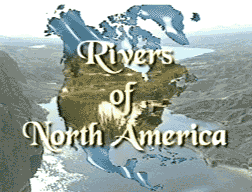

| director |
| home page |
|
(General Questions) - Varsity Television (Films on the Site) - Visions, couple of questions (Films on the Site) - A BEAUTIFUL MIND and I AM SAM (Film Recommendations) Studentfilms. .com - The on-line student film festival and student film maker resource. (Film as Art) - FSU (Film Schools) - Rotoscoping lightning. (Adobe Photoshop) - video production at the Art Institute. |
 |
. The Fund is designed to support the creation of original documentary films and videos that promote thoughtful consideration of Jewish history, culture, identity, and contemporary issues among diverse public audiences. A number of the films have gone on to screen at the Sundance, Berlin and other film festivals, and appear on PBS. Applicants must have creative, editorial, and budgetary control of the proposed project, and must own the copyright of the completed film or video. All applicants must submit one completed work for which they had primary responsibility. |
 |
|  | Includes press clippings and features dealing with the film, its cast and crew. . The following materials concern the production, distribution and use of a particular type of film or video being produced currently in Africa. Catalog from Development through Self-Reliance Inc. A report produced by Media for Development International. |